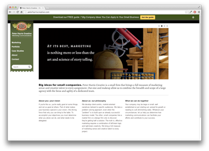
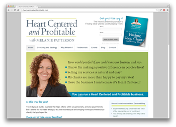

#1: I stay up-to-date with marketing trends.
With all the big changes happening in email marketing, it's imperative for organizations to keep up with trends. I regularly read blogs like Campaign Monitor, Litmus, and Email Design Review, along with a host of other tech and marketing blogs. I believe my interest in the subject is something that can't be taught, and would be valuable to a company like King Arthur.
#2: I'm a self-starter with a passion for technology.
Technology has been an interest of mine for as long as I can remember. In fact, over the last few months I've been teaching myself the programming language Ruby in my spare time (if you're not familiar with Ruby, it's an elegant and powerful scripting language that is great for writing web applications). If you'd like, please feel free to check out my learning journal.
The prospect of bridging the gap between web and marketing teams sounds like a blast to me! It's where my two biggest professional passions collide.
#3: I've developed email marketing programs from the ground up.
In order to learn more about the sales and marketing process, I've been developing a downloadable education product, that teaches GRE-level math. I've been able to:
- create a predictable source of leads (one video of mine is in the #2 spot on YouTube for the search term "GRE Math") that drives daily email subscribers.
- write email marketing copy that converts.
- track analytics and tighten up my conversion funnel.
- develop a product comprised of video and written materials.
- provide great customer service and gather testimonials.
The process has taught me a lot about creating great content, nurturing relationships, and learning from KPIs.
#4: I earned an MBA from Antioch University New England in Organizational and Environmental Sustainability.
While I was at Antioch, a large portion of my education was focused on developing marketing skills. Some of my favorite projects included a consulting job with the W.S. Badger Company, and developing an actionable marketing guide, targeted at the restaurant industry.
I specifically chose the program at Antioch because of its focus on triple bottom line business. I believe my personal values and those of King Arthur's are in alignment, which can be the basis of a great relationship.
#5: I regularly use HTML/CSS.
As a Marketing Associate at a small marketing firm, I wear many hats. Prior to me working there, all of the web development was outsourced to a different company. Since I've been there, we've been able to keep the majority of our web development in-house. Because of this, we've been able to increase the value we deliver to our customers.
Here are a couple samples of sites I've worked on:
By the way, you probably noticed the incentivized lead-capture at the top of both these sites. Building a strong email list is something I've pushed for with a lot of the clients we've worked with.
#6: I'm comfortable with a wide-range of software.
Admittedly, I haven't used Dreamweaver or Fireworks much. However, I am very comfortable with Illustrator, Photoshop, InDesign, and lots of other software. More importantly, I've been told that I pick up new software very quickly. I also regularly monitor Google Analytics for a number of different sites.
#7: People seem to like working with me.
A former professor and a current Regional Director with the NHSBDC had this to say about me:
I am in a unique position of having worked with Greg while at Antioch and in his current position, and of his suite of impressive skills, I am most impressed with his ability to continually adapt to market conditions and the needs of his clients. Being a marketing professional today is not easy - one can no longer rely on "tried and true" methods, and Greg continues to embrace innovative approaches, especially those that build from technology platforms.
In addition to that, my current boss wrote about me:
Smart. Industrious. Innovative. Greg is pleasant to work with. He has well defined ideas and communicates them effectively. He has diverse interests and capabilities, which make him a tremendous asset in a small office. Greg is a great listener and a true collaborator.
If you'd like to read the full recommendations, please feel free to visit my LinkedIn page.
#8: I believe in over-delivering
There's no question that we live in a world that has grown tired of being marketed to. In order to thrive as a company today, I believe it's critical to constantly be over-delivering. It really seems like King Arthur is doing an amazing job of creating high-quality content and over-delivering at every chance they get. That sounds like the kind of company I'd like to work for.
Closing
If possible, I'd love to visit King Arthur for the chance to interview. My contact information is below.
Cindy, if I don't hear back from you, I will be following up via email later this week. Here is a copy of my résumé
I look forward to hearing from you. Thanks for your time.
Contact
- email: greg.elizondo@gmail.com
- phone: 716.816.6400